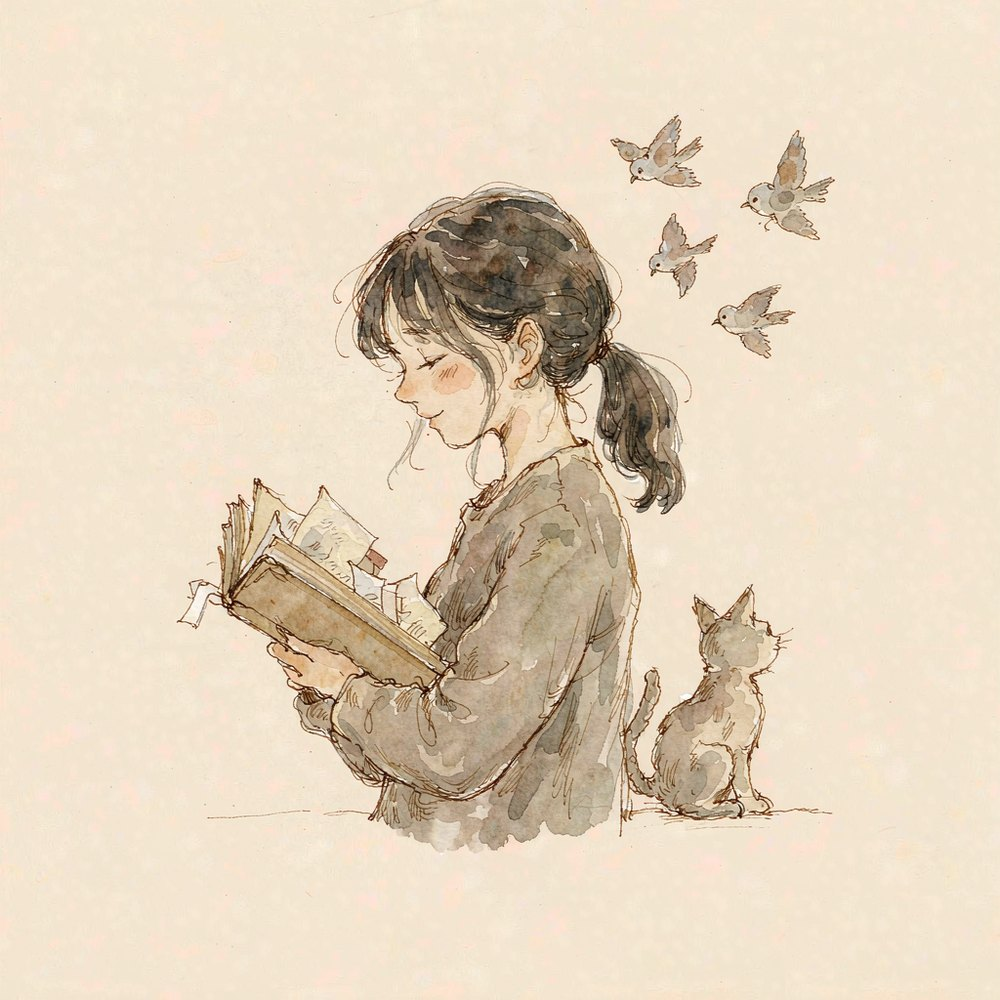
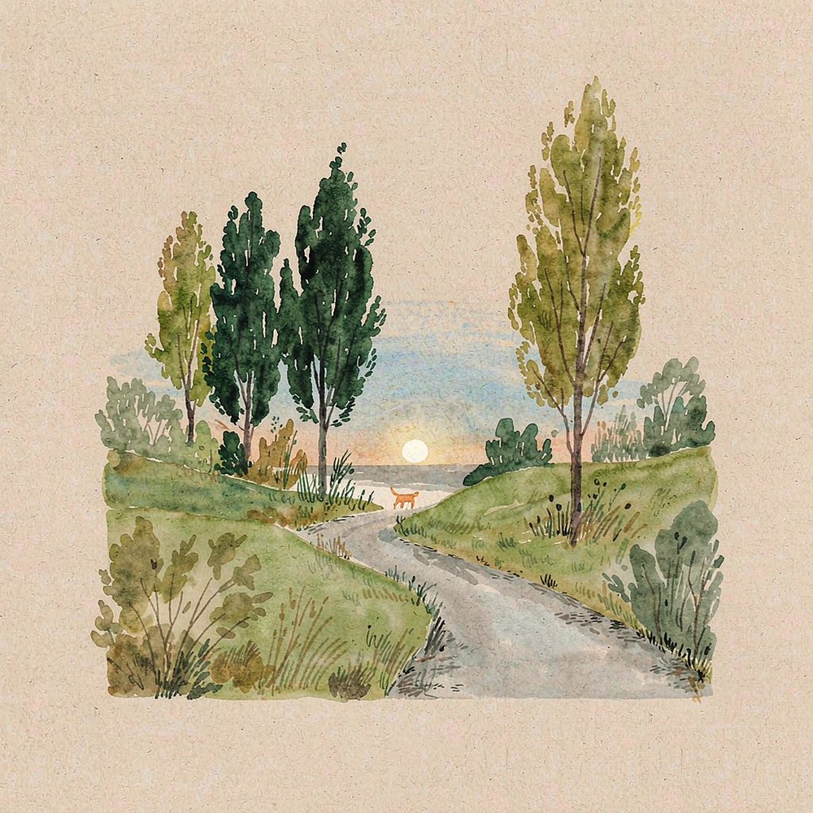
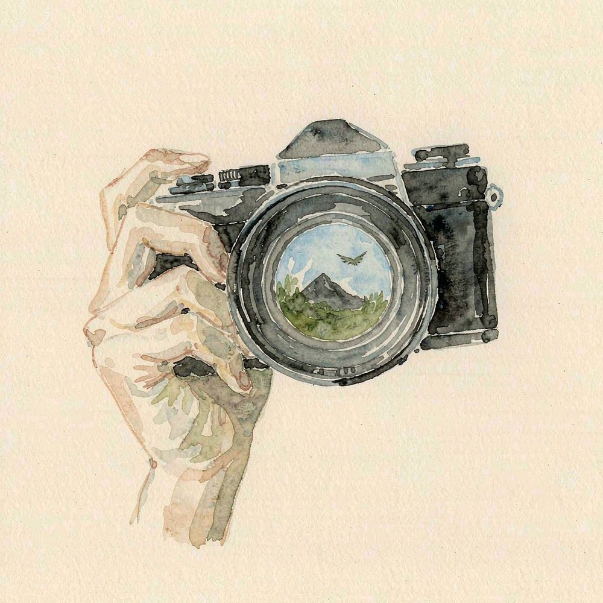
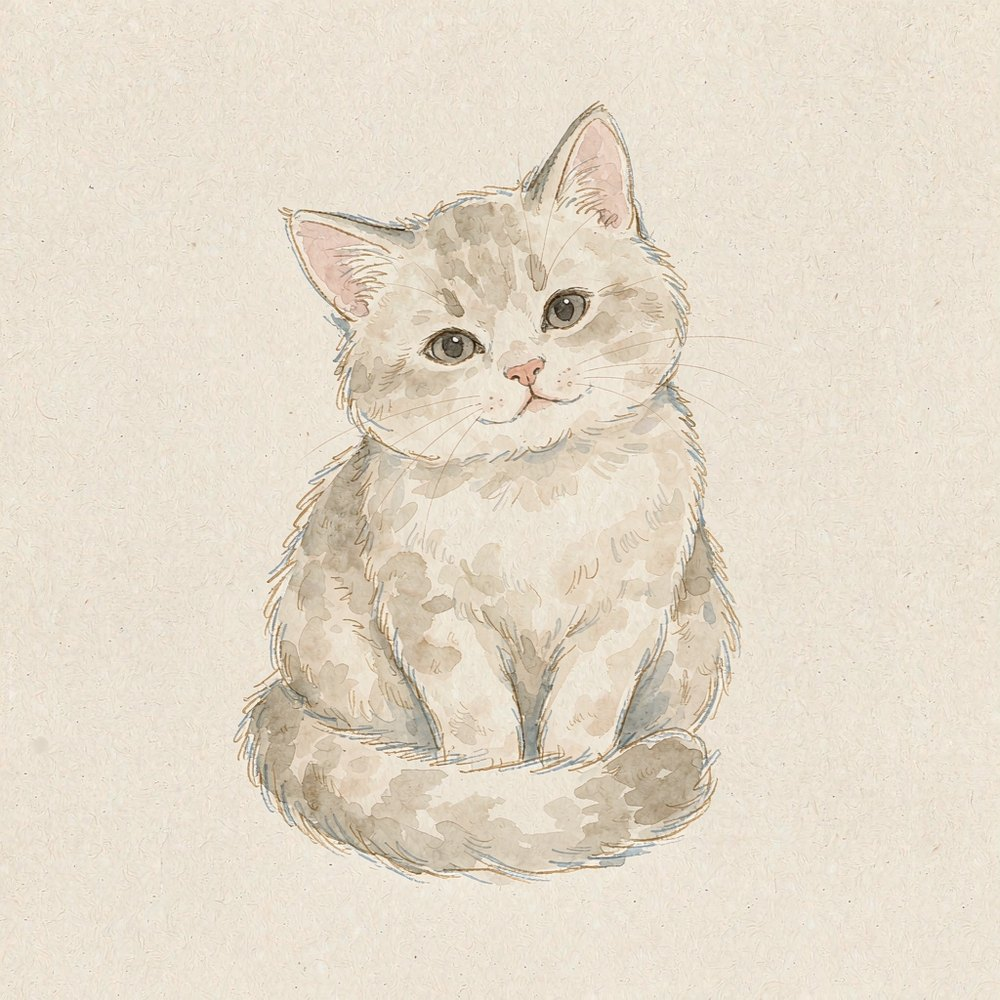
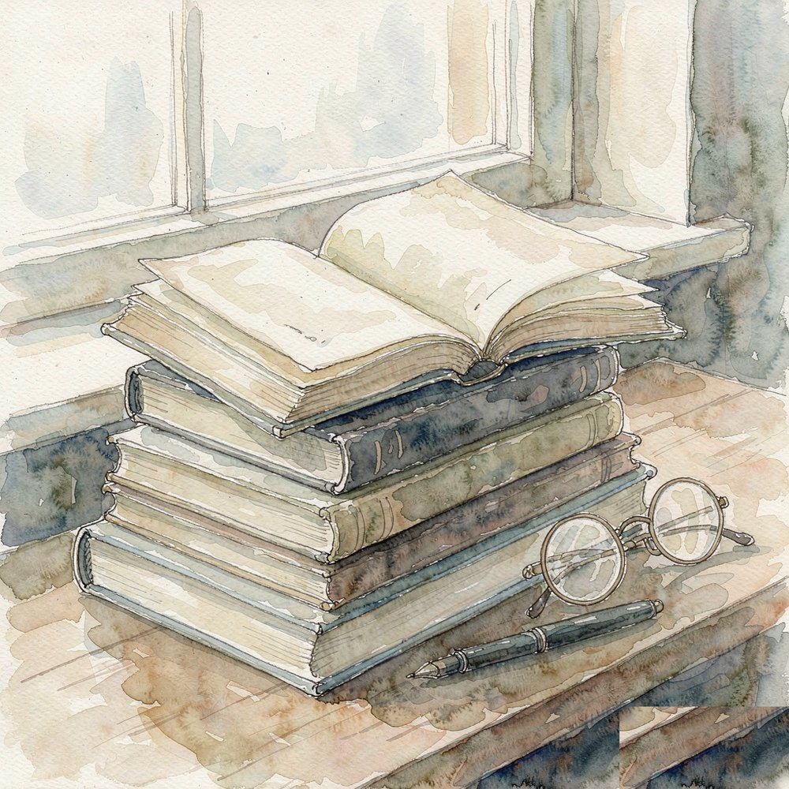
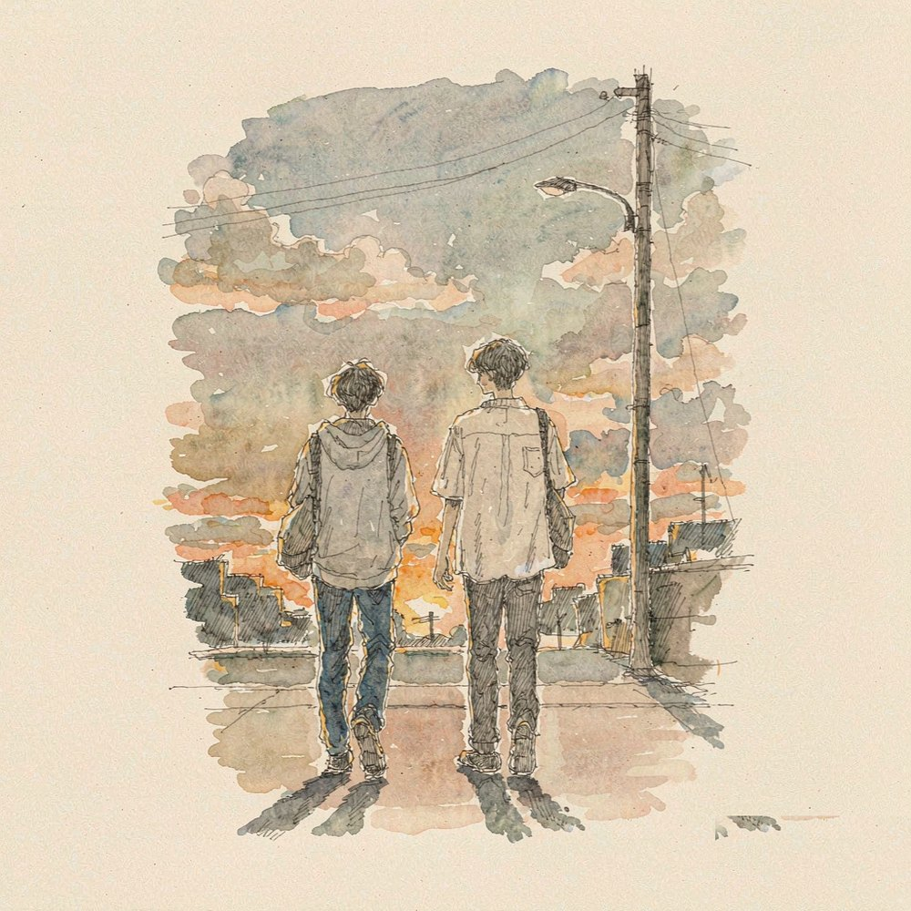

看书
Reading
纸质的书，电子的书都看。喜欢的时候一口气读完，不喜欢的时候放在床头三个月。 挑书是有点挑的：写得真诚的、敢写人性丑的、读的时候能让我忘记现实的。
- 常读：莫言、余华、王小波
- 偏好：现实题材、长句、有痛感
- 状态：读进去了会忘记时间
HELLO, NICE TO MEET YOU
XIAO YAO · 一个爱读书的人
在书页间捡拾句子，
在快门里收藏天气。
我喜欢读书，尤其是那些能把人写得又狠又暖的文字；喜欢摄影，把看到的风景和猫留下来； 喜欢散步，走着走着就把烦恼忘了；也喜欢小区里那些猫，蹲下来看它们一会儿，心情就好了。

看书对我来说不是消遣，更像是逃跑——逃进别人的故事里待一会儿，再回到自己的。 我偏爱那种写得很狠的作家，读完心里会有点疼，但过一阵又觉得痛快。 摄影和散步是我表达的方式，看到好看的就拍下来，走到哪里算哪里。
我们小区里有很多猫。橘的、黑的、白的，散在花坛和车库里。 我常带点猫粮下去，蹲在那里看它们吃完再走——这大概算是我一天里最安静的十分钟。
「一切人类的幸福都是
人类自己创造出来的，
但这种幸福是有代价的。」
—— 王小波Reading
纸质的书，电子的书都看。喜欢的时候一口气读完，不喜欢的时候放在床头三个月。 挑书是有点挑的：写得真诚的、敢写人性丑的、读的时候能让我忘记现实的。
Photography
拍得不算好，但很爱拍。喜欢拍傍晚的光、拍猫的睡姿、拍街角那些没人注意的细节。 相机的快门声会让我觉得这一刻被认真对待了。
Walking
没什么目的地的走。晚饭后绕小区两圈，或者坐公交到某个没去过的站再走回来。 浙江的雨下得细，走在雨里也不用打伞，等一会儿就停了。走着走着，一天里那些堵住的事就自己通了。
Playing with cats
我家没养猫，但小区里有很多。橘的、黑的、白的，散在花坛和车库之间。 我常带点猫粮下去，蹲在一边看它们吃完再走。不用做什么，只是看着，就很治愈。
参透「参透」二字
使我落在命运的圈套里





以上为示意插画，之后可以替换成你自己拍的照片
我不是那种必须一直说话才舒服的人。如果你也能在沉默里觉得自在， 一起喝杯茶谁也不说话，我们会是很好的朋友。
有一件愿意花时间、能聊很久、别人觉得无聊但你很享受的事。 这样我也可以跟你讲我的书和我楼下那几只猫，大概会很有趣。
一起走走，不挑目的地、不赶时间。聊到哪儿算哪儿，不聊也行。 我知道这听起来有点慢，但慢一点才能认识得久一点。
如果你觉得我们大概聊得来，
来打个招呼吧，我大概率会回。
（这句话待完善，等你想好怎么表达再改）联系方式还没填上，之后补齐就能用了。
随便写点什么，我会认真看。需要登录 GitHub 账号才能留言。